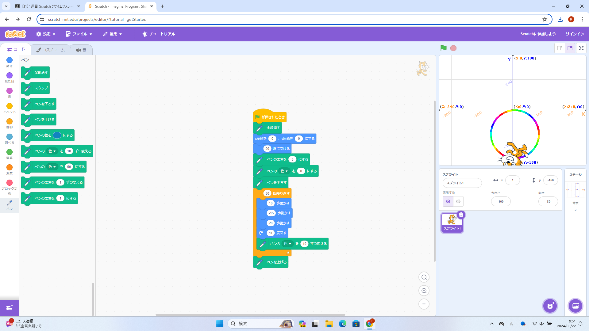

1-1 サイエンスアート

1.内容
ネコの動きに合わせて線を引く。
ネコを移動させるプログラムを作る。
移動に合わせて線を引く。
書くたびに線の色を変えるようにした。
繰り返し移動させて図形をかく。
2.感想
スクラッチを以前にやったことがあったので、とてもスムーズにできました。
久しぶりのスクラッチで数値を変えたら動きが全く異なるとこがとても興味深いと思います。
23w
思ったような動きをさせることができなかったことが悲しかったです。
しかし、思ったような動きでなくてもきれいな図形ができました。
また、時間があれば数値を色々いじってみたいなと思いました。